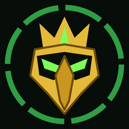
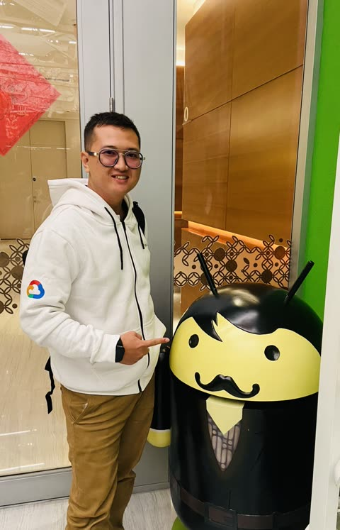
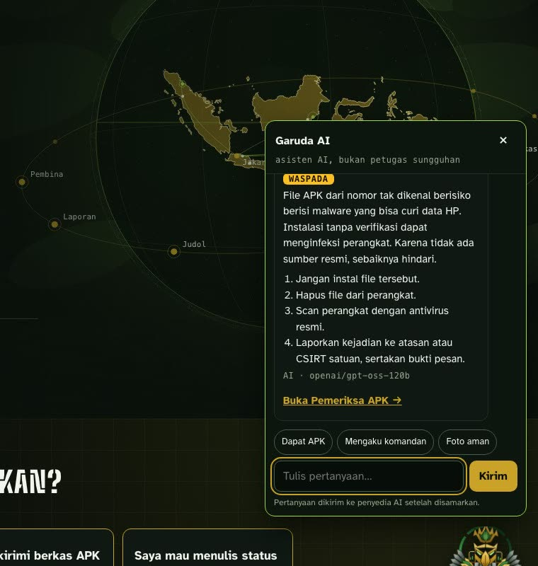
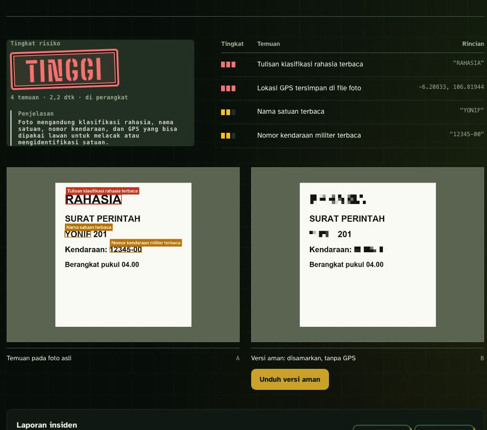
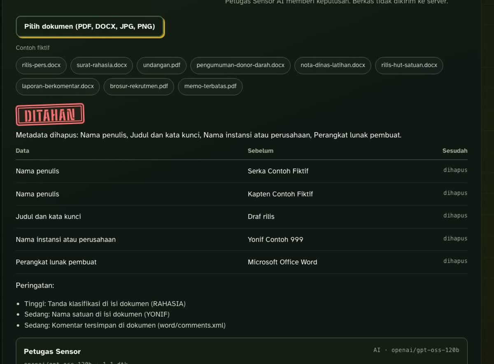
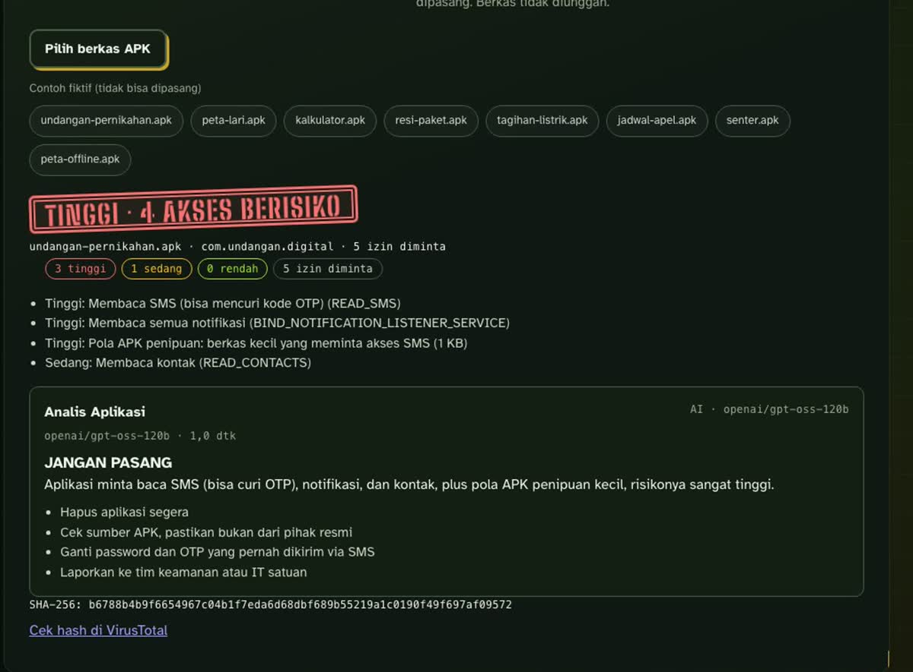
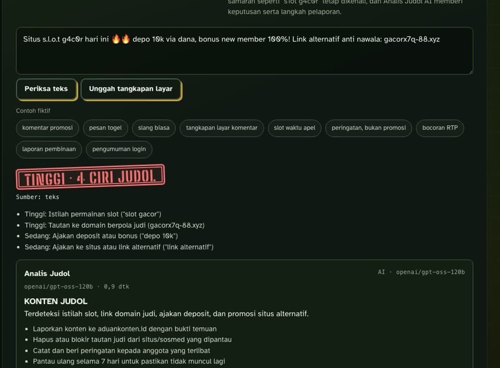
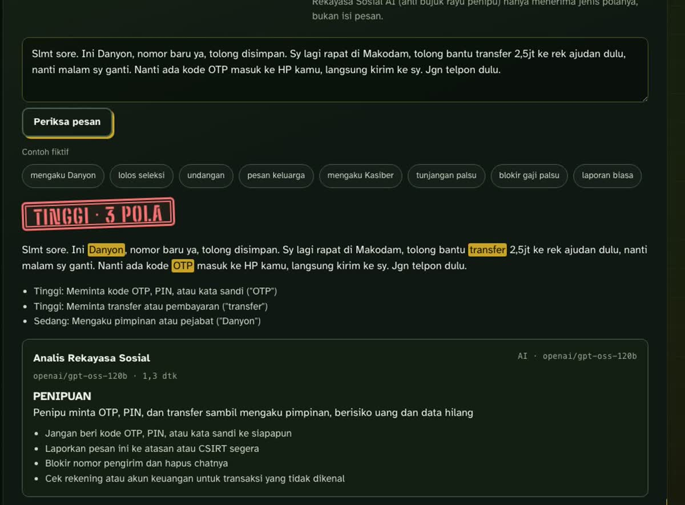
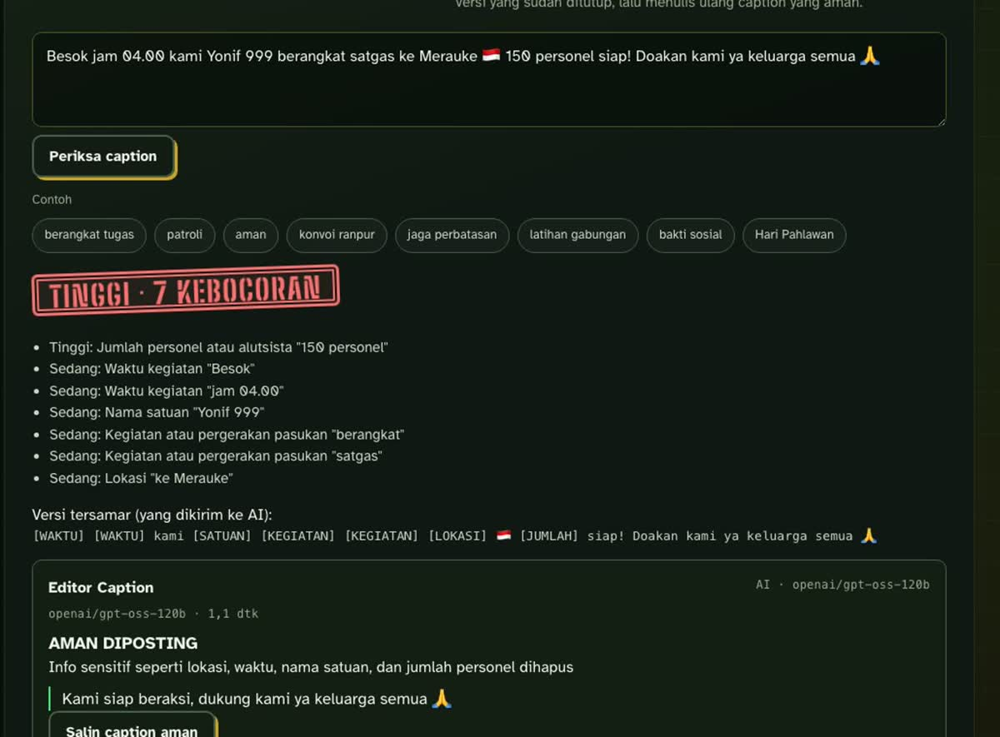
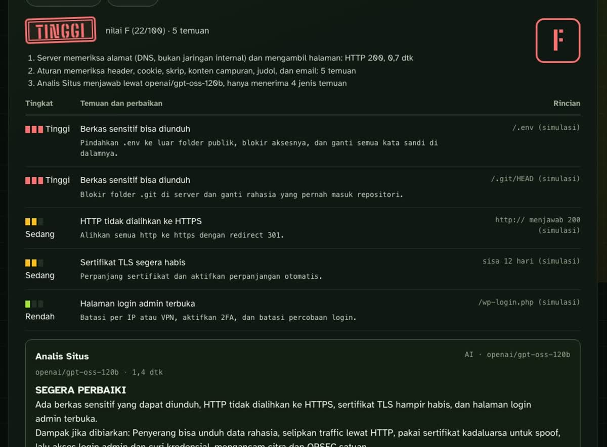

OPSEC Guard AI: 13 agen AI dan 8 modul pemeriksa yang mencegah foto, pesan, berkas, dan situs satuan membocorkan informasi ke pihak lawan.
Pendidik dan praktisi cloud & keamanan siber dari Kota Blitar, Jawa Timur. Membangun OPSEC Guard AI agar kesadaran keamanan informasi hadir di HP setiap prajurit, bukan hanya di ruang pembinaan.

Unggahan swafoto di medsos membuka koordinat gedung fasilitas dinas kepada tim analis dalam waktu kurang dari sehari.
Peta panas aplikasi lari Strava secara terbuka memperlihatkan rute patroli dan denah perimeter pangkalan militer di berbagai belahan dunia.
Dalam evaluasi latihan tempur Marinir AS, posisi peleton terdeteksi oleh tim lawan akibat swafoto yang melanggar disiplin komunikasi.
Investigasi Le Monde membuktikan data kebugaran pengawal presiden (Macron, Biden) mengekspos pergerakan dan hotel yang belum dipublikasikan.
Pelajaran utama: Kebocoran OPSEC di era modern bukan karena niat buruk, melainkan ketidaktahuan akan jejak digital yang tertinggal di foto, dokumen, dan aplikasi.
Jejak digital nama, pangkat, NRP, dan jejaring di medsos menjadi sasaran pengumpulan intelijen untuk rekayasa sosial dan pemetaan satuan.
Berkas dinas (PDF/DOCX) dan foto kegiatan tanpa sanitasi metadata rentan memuat informasi perangkat, nama penyusun, dan koordinat pos.
Temuan ribuan personel aparat terindikasi permainan judol menjadi celah rawan rekayasa sosial, pemerasan (blackmail), dan pembocoran data dinas.
Modus pengiriman APK palsu via WhatsApp membobol SMS dan kode verifikasi perangkat, dengan kerugian korban hingga miliaran rupiah.
Kuncinya bukan melarang teknologi, tapi membekali personel dengan alat perlindungan di genggaman: periksa sebelum bertindak.
Kebocoran OPSEC jarang disengaja. Prajurit tidak tahu foto menyimpan koordinat, atau tulisan kecil di latar bisa diperbesar. Pembinaan berkala tidak hadir di detik itu. OPSEC Guard AI hadir.
Setiap modul punya agen AI khusus. Komandan Siber mengarahkan, Garuda AI menjawab pertanyaan apa pun.
Prajurit menulis dengan bahasa sendiri: "Saya dapat file undangan.apk dari nomor tak dikenal."
Garuda AI menilai, memberi label WASPADA, langkah konkret, dan membuka modul yang tepat.
Nama model selalu ditampilkan. Transparan.

Deteksi objek (YOLO-World), OCR, dan GPS di metadata, semuanya di browser.
Versi aman otomatis: tulisan rahasia, satuan, dan pelat disamarkan, GPS dihapus.
3 agen berpikir seperti lawan: skor keterlacakan turun ke 0 setelah disamarkan.

Metadata PDF, DOCX, dan foto dibaca: nama penulis, instansi, komentar.
Petugas Sensor AI memutuskan: tahan atau loloskan.
Dokumen bersih mendapat Surat Lolos Sensor ber-SHA-256.

Izin aplikasi dibaca langsung di HP, tanpa memasangnya.
Pola penipuan: berkas kecil yang meminta baca SMS untuk mencuri OTP.
Analis Aplikasi AI memberi langkah, plus hash untuk dicek di VirusTotal.

Ejaan samaran dibaca dengan pencocokan fuzzy.
Bekerja juga dari tangkapan layar lewat OCR.
Aturan yang sama dipakai Pemindai Web untuk menemukan sisipan judol di situs satuan.



Pasif: satu permintaan GET, tanpa serangan.
Etis: hanya situs yang terbukti milik sendiri; alamat internal diblokir.
Setiap temuan disertai baris konfigurasi perbaikan dari Analis Situs AI.

YOLO-World ONNX · Tesseract.js · exifr · pdf-lib · JSZip
Foto & dokumen tidak keluar
Fungsi awan tanpa simpan data · allow-list · validasi skema JSON
Groq (utama) · Gemini (cadangan) · bisa LLM lokal satuan
0 foto dikirim ke server
Biaya server Rp0 di Tencent EdgeOne
Tahan prompt injection: agen hanya menerima jenis temuan
Bisa offline setelah kunjungan pertama (PWA)
SRI di semua CDN, pengaman SSRF, tanpa data pribadi pihak ketiga
Penyedia AI bisa diganti, termasuk LLM lokal di jaringan satuan
Laporan insiden ber-SHA-256 untuk Kartika CSIRT
Cukup dibagikan sebagai link di grup satuan, tanpa instalasi
Tahap berikut: model khusus alutsista TNI, pemindai video, integrasi dashboard CSIRT.
Demo: kartika-opsec-guard-ai.edgeone.cool
Video: youtube.com/watch?v=xOER9a6XUEw